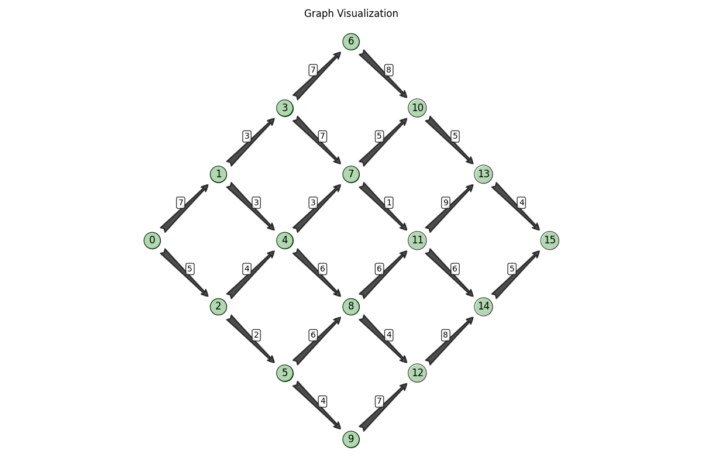
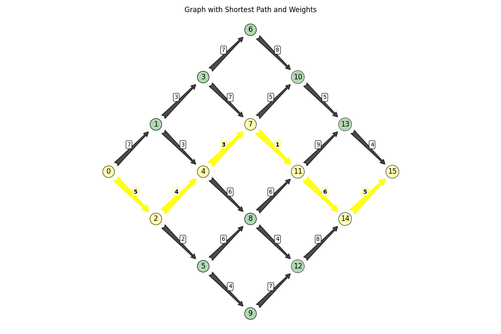
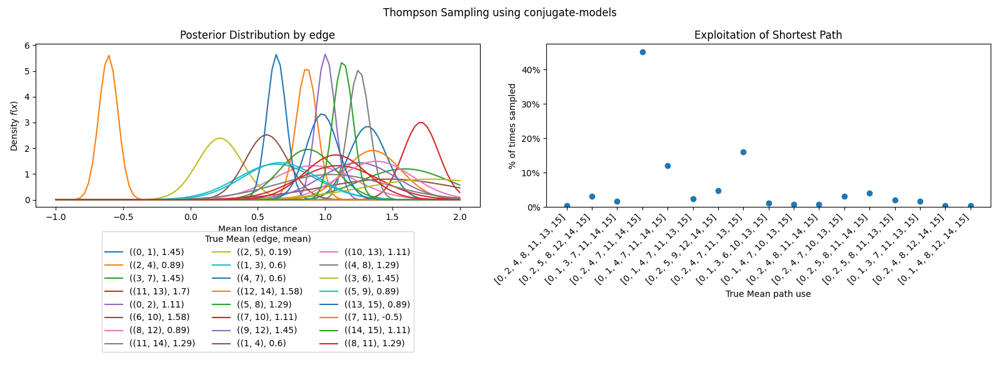

The Shortest Path problem with independent travel times
Theoretical background
We will consider a directed graph \(G=(V,E)\) with vertices \(V=\{1,2,...,N\}\), edges \(E\subset V \times V\) and mean travel times \(\Theta \in \mathbb{R}^{E}\). Vertex 1 is the source and \(N\) the destination. We will examine paths \(x = (e_1, e_2, \ldots, e_k)\) where \(e_i \in E\) for all \(i \in \{1, 2, \ldots, k\}\) and \(e_1 =(1, n)\) and \(e_k =(m, N)\).
Whenever we use a path \(x\) for each edge \(e\) we observe a travel time \(y_{e}\). The prior distribution that we will use for the mean travel time \(\theta_{e}\) is: $$ \theta_{e} \sim \text{LogNormal}(\mu_{e}, \sigma^2_{e}), $$ where $$ \mathbb{E}[\theta_{e}] = \Theta_{e} = e^{\mu_{e} + \sigma^2_{e}/2}. $$
We further assume that observed travel times are drawn from: $$ y_e| \theta_e \sim \text{LogNormal}(\ln(\theta_e) - \frac{\tilde{\sigma}}{2}, \tilde{\sigma}^2), $$ so that: $$ \mathbb{E}[y_e|\theta_{e}] = \theta_{e} $$
The update is given by: $$ \left(\mu_e, \sigma_e^2\right) \leftarrow \left( \frac{1}{\frac{1}{\sigma_e^2} + \frac{1}{\tilde{\sigma}^2}} \left( \frac{\mu_e}{\sigma_e^2} + \frac{\ln(y_{t,e}) + \frac{\tilde{\sigma}^2}{2}}{\tilde{\sigma}^2} \right), \frac{1}{\frac{1}{\sigma_e^2} + \frac{1}{\tilde{\sigma}^2}} \right) $$
Example
We will consider the following graph:
import numpy as np
import matplotlib.pyplot as plt
from matplotlib.patches import FancyArrowPatch
# Define the graph
nodes = range(16)
edges = {
(0, 1),
(0, 2),
(1, 3),
(1, 4),
(2, 4),
(2, 5),
(3, 6),
(3, 7),
(4, 7),
(4, 8),
(5, 8),
(5, 9),
(6, 10),
(7, 10),
(7, 11),
(8, 11),
(8, 12),
(9, 12),
(10, 13),
(11, 13),
(11, 14),
(12, 14),
(13, 15),
(14, 15),
}
# Definition of the graph
graph = {k: {l for l in nodes if (k, l) in edges} for k in nodes}
coordinates = [
(0, 0),
(1, 1),
(1, -1),
(2, 2),
(2, 0),
(2, -2),
(3, 3),
(3, 1),
(3, -1),
(3, -3),
(4, 2),
(4, 0),
(4, -2),
(5, 1),
(5, -1),
(6, 0),
]
Helper functions
Plots and shortest path
- Plot graph with path
- Dijkstra algorithm
- Get the shortest path
import heapq
import numpy as np
import matplotlib.pyplot as plt
from matplotlib.patches import FancyArrowPatch
def plot_graph_with_path(
nodes,
edges,
coordinates,
weights=None,
path=None,
used_edges=None,
node_size=400,
node_color="green",
edge_color="black",
path_color="red",
path_width=2.5,
arrow_style="fancy",
node_labels=True,
weight_labels=True,
weight_fontsize=10,
weight_offset=0.1,
title="Graph with Path",
figsize=(12, 8),
show=True,
):
"""
Plot a directed graph with nodes, edges, weights, and an optional highlighted path.
Parameters:
-----------
nodes : list or range
The nodes in the graph.
edges : set of tuples
The edges in the graph as (source, target) tuples.
coordinates : list of tuples
The (x, y) coordinates for each node.
weights : dict, optional
Dictionary mapping edge tuples (source, target) to their weights.
path : list, optional
A list of nodes forming a path to highlight.
used_edges : set of tuples, optional
Set of edges to highlight as (source, target) tuples.
node_size : int, optional
Size of the nodes. Default is 400.
node_color : str, optional
Color of the regular nodes. Default is 'green'.
edge_color : str, optional
Color of the regular edges. Default is 'black'.
path_color : str, optional
Color for highlighting the path. Default is 'red'.
path_width : float, optional
Width of the highlighted path edges. Default is 2.5.
arrow_style : str, optional
Style of the arrow. Default is 'fancy'.
node_labels : bool, optional
Whether to display node labels. Default is True.
weight_labels : bool, optional
Whether to display edge weight labels. Default is True.
weight_fontsize : int, optional
Font size for weight labels. Default is 10.
weight_offset : float, optional
Offset for positioning weight labels. Default is 0.1.
title : str, optional
Title of the plot. Default is 'Graph with Path'.
figsize : tuple, optional
Figure size. Default is (12, 8).
show : bool, optional
Whether to display the plot. Default is True.
Returns:
--------
fig, ax : matplotlib figure and axis objects
The figure and axis objects for further customization.
"""
# Extract x and y coordinates
x_coords = [tup[0] for tup in coordinates]
y_coords = [tup[1] for tup in coordinates]
# Create figure and axis
fig, ax = plt.subplots(figsize=figsize)
# Node radius for determining arrow endpoints
node_radius = 0.2
# First, plot regular edges
for edge in edges:
# Skip if this edge is in the path (we'll draw it separately)
if used_edges and edge in used_edges:
continue
start, end = edge
# Get coordinates
start_x, start_y = x_coords[start], y_coords[start]
end_x, end_y = x_coords[end], y_coords[end]
# Calculate direction vector
dx = end_x - start_x
dy = end_y - start_y
# Calculate distance
length = np.sqrt(dx**2 + dy**2)
# Normalize direction vector
dx, dy = dx / length, dy / length
# Adjust endpoints
new_start_x = start_x + node_radius * dx
new_start_y = start_y + node_radius * dy
new_end_x = end_x - node_radius * dx
new_end_y = end_y - node_radius * dy
# Create arrow
arrow = FancyArrowPatch(
(new_start_x, new_start_y),
(new_end_x, new_end_y),
arrowstyle=arrow_style,
connectionstyle="arc3,rad=0",
color=edge_color,
lw=1.5,
alpha=0.7,
mutation_scale=20,
)
ax.add_patch(arrow)
# Add weight label if weights are provided
if weight_labels and weights and edge in weights:
# Calculate position for weight label (midpoint with a small offset)
mid_x = (start_x + end_x) / 2
mid_y = (start_y + end_y) / 2
# Add a small perpendicular offset to avoid overlap with the arrow
perp_dx = -dy # Perpendicular to direction vector
perp_dy = dx # Perpendicular to direction vector
label_x = mid_x + weight_offset * perp_dx
label_y = mid_y + weight_offset * perp_dy
# Add weight label
ax.text(
label_x,
label_y,
str(weights[edge]),
fontsize=weight_fontsize,
ha="center",
va="center",
bbox=dict(facecolor="white", alpha=0.8, boxstyle="round,pad=0.2"),
)
# Then plot path edges, if any
if used_edges:
for edge in used_edges:
start, end = edge
# Get coordinates
start_x, start_y = x_coords[start], y_coords[start]
end_x, end_y = x_coords[end], y_coords[end]
# Calculate direction vector
dx = end_x - start_x
dy = end_y - start_y
# Calculate distance
length = np.sqrt(dx**2 + dy**2)
# Normalize direction vector
dx, dy = dx / length, dy / length
# Adjust endpoints
new_start_x = start_x + node_radius * dx
new_start_y = start_y + node_radius * dy
new_end_x = end_x - node_radius * dx
new_end_y = end_y - node_radius * dy
# Create arrow for path edge (with different style)
path_arrow = FancyArrowPatch(
(new_start_x, new_start_y),
(new_end_x, new_end_y),
arrowstyle=arrow_style,
connectionstyle="arc3,rad=0",
color=path_color,
lw=path_width,
alpha=0.9,
mutation_scale=25,
)
ax.add_patch(path_arrow)
# Add weight label if weights are provided
if weight_labels and weights and edge in weights:
# Calculate position for weight label (midpoint with a small offset)
mid_x = (start_x + end_x) / 2
mid_y = (start_y + end_y) / 2
# Add a small perpendicular offset to avoid overlap with the arrow
perp_dx = -dy # Perpendicular to direction vector
perp_dy = dx # Perpendicular to direction vector
label_x = mid_x + weight_offset * perp_dx
label_y = mid_y + weight_offset * perp_dy
# Add weight label with different style for path edges
ax.text(
label_x,
label_y,
str(weights[edge]),
fontsize=weight_fontsize,
ha="center",
va="center",
color="black",
fontweight="bold",
bbox=dict(
facecolor="white",
alpha=0.8,
edgecolor=path_color,
boxstyle="round,pad=0.2",
),
)
# Plot nodes with different colors for path nodes
if path:
# Create node colors list - path nodes get a different color
node_colors = [path_color if i in path else node_color for i in nodes]
ax.scatter(x_coords, y_coords, s=node_size, c=node_colors, zorder=2)
else:
# All nodes have the same color
ax.scatter(x_coords, y_coords, s=node_size, c=node_color, zorder=2)
# Add node labels if requested
if node_labels:
for i, (x, y) in enumerate(zip(x_coords, y_coords)):
ax.text(
x,
y,
str(i),
fontsize=12,
ha="center",
va="center",
bbox=dict(facecolor="white", alpha=0.7, boxstyle="circle"),
)
# Add title
ax.set_title(title)
# Turn off axes
ax.axis("off")
# Set equal aspect ratio
ax.set_aspect("equal")
# Apply tight layout
plt.tight_layout()
# Show the plot if requested
if show:
plt.show()
return fig, ax
def dijkstra_with_paths(graph, start, weights):
"""
Find shortest paths from start node to all other nodes using Dijkstra's algorithm.
Args:
graph: Dictionary with nodes as keys and sets of neighboring nodes as values
start: Starting node index
weights: Dictionary mapping edge tuples (source, destination) to their weights
Returns:
distances: Dictionary of shortest distances from start to each node
predecessors: Dictionary of predecessors for each node in the shortest path
"""
# Initialize distances with infinity for all nodes except start
distances = {node: np.inf for node in graph}
distances[start] = 0
# Dictionary to store predecessors
predecessors = {node: None for node in graph}
# Priority queue with (distance, counter, node)
pq = [(0, 0, start)]
counter = 1
# Visited set to track processed nodes
visited = set()
while pq:
# Get node with smallest distance
current_distance, _, current_node = heapq.heappop(pq)
# Skip if already processed
if current_node in visited:
continue
# Mark as visited
visited.add(current_node)
# Process all neighbors
for neighbor in graph[current_node]:
# Skip if already processed
if neighbor in visited:
continue
# Find the edge weight - adapt to your weight structure
edge_weight = weights[(current_node, neighbor)]
# Calculate new distance
new_distance = current_distance + edge_weight
# Update if we found a shorter path
if new_distance < distances[neighbor]:
distances[neighbor] = new_distance
predecessors[neighbor] = current_node
heapq.heappush(pq, (new_distance, counter, neighbor))
counter += 1
return distances, predecessors
def get_shortest_path(predecessors, end):
"""
Reconstruct the shortest path from start to end using predecessors.
Args:
predecessors: Dictionary of predecessors where keys are node indices
start: Starting node index
end: Ending node index
names: List of node names corresponding to their indices
Returns:
tuple: (path, used_edges) where:
- path is a list representing the shortest path from start to end with node names
- used_edges is a set of tuples (from_node, to_node) representing the edges used
"""
path = []
used_edges = set()
current = end
# No path exists
if predecessors[end] is None and start != end:
return [], set()
# Build path in reverse
while current is not None:
path.append(current)
# Add the edge to used_edges if there is a predecessor
predecessor = predecessors[current]
if predecessor is not None:
# Add edge (predecessor, current) to used_edges
used_edges.add((predecessor, current))
current = predecessor
# Reverse to get path from start to end
return path[::-1], used_edges
# we use some random distances for the set of edges
weights = {e: np.random.randint(1, 10) for e in edges}
start = 0
end = 15
distances, predecessors = dijkstra_with_paths(graph, start, weights)
path_, used_edges = get_shortest_path(predecessors, end)
fig, ax = plot_graph_with_path(
nodes,
edges,
coordinates,
weights=weights, # Pass your weights dictionary
title="Graph Visualization",
path_color="yellow",
)
fig, ax = plot_graph_with_path(
nodes,
edges,
coordinates,
weights=weights, # Pass your weights dictionary
path=path_,
used_edges=used_edges,
title="Graph with Shortest Path and Weights",
path_color="yellow",
)


Sampling functions
- sampling from the true distribution of a path
- create the statistics required for Bayesian update of normal with known variance
- single step in the Thompson sampling process
from conjugate.distributions import Normal from conjugate.models import normal_known_variance ini_sigma = 1 sigma_tilda = 1 ordered_edges = list(edges) edge_to_index = {ordered_edges[k]: k for k in range(len(ordered_edges))} means = np.array([np.log(weights[edge]) - (ini_sigma) ** 2 / 2 for edge in edges]) sigma = np.ones(means.shape[0]) * (ini_sigma) true_dist = Normal(mu=means, sigma=sigma) path_selection_count = {} def sample_true_distribution( edges_to_sample: list, rng, true_dist: Normal = true_dist, ) -> float: return [ true_dist[edge_to_index[edge]].dist.rvs(random_state=rng) for edge in edges_to_sample ] def bayesian_update_stats( edges_sampled: list, edges_sample: list, n_edges: int = len(edges), ) -> tuple[np.ndarray, np.ndarray]: x = np.zeros(n_edges) n = np.zeros(n_edges) mask = [edge_to_index[edge] for edge in edges_sampled] x[mask] = np.log(np.exp(edges_sample)) n[mask] = 1 return x, n def thompson_step(estimate: Normal, rng) -> Normal: sample = estimate.dist.rvs(random_state=rng) weights_ = {ordered_edges[k]: np.exp(sample[k]) for k in range(len(edges))} _, predecesors = dijkstra_with_paths(graph, start, weights_) path, edges_to_sample = get_shortest_path(predecesors, 15) path_selection_count.setdefault(str(path), 0) path_selection_count[str(path)] += 1 edges_sample = sample_true_distribution(edges_to_sample, rng=rng) x, n = bayesian_update_stats(edges_to_sample, edges_sample) return normal_known_variance(x_total=x, n=n, var=sigma_tilda, prior=estimate)
Ts simulation
mu = np.ones(len(edges)) * -0.5
sigma = np.ones(len(edges))
estimate = Normal(mu=mu, sigma=sigma)
rng = np.random.default_rng(42)
total_samples = 250
for _ in range(total_samples):
estimate = thompson_step(estimate=estimate, rng=rng)
We can see that the edges that correspond to the shortest path were actually exploited the most!
fig, axes = plt.subplots(ncols=2, figsize=(16, 6)) # Wider figure
fig.suptitle("Thompson Sampling using conjugate-models")
edges_means = [
(ordered_edges[k], round(float(means[k]), 2)) for k in range(len(ordered_edges))
]
ax = axes[0]
estimate.set_min_value(-1)
estimate.set_max_value(2).plot_pdf(label=edges_means, ax=ax)
# Place legend below the plot as a horizontal array
ax.legend(
title="True Mean (edge, mean)",
bbox_to_anchor=(0.5, -0.15), # Position below the plot
loc="upper center", # Anchor at the top center of the bbox
ncol=3, # Arrange in 4 columns (adjust as needed)
frameon=True, # Add a frame
borderaxespad=0.0,
) # No padding between axes and legend
ax.set(
xlabel="Mean log distance",
title="Posterior Distribution by edge",
)
ax = axes[1]
sampled_paths = list(path_selection_count.keys())
n_times_sampled = [path_selection_count[key] / total_samples for key in sampled_paths]
ax.scatter(sampled_paths, n_times_sampled)
ax.set(
xlabel="True Mean path use",
ylabel="% of times sampled",
ylim=(0, None),
title="Exploitation of Shortest Path",
)
# Format yaxis as percentage
ax.yaxis.set_major_formatter(plt.FuncFormatter(lambda x, _: f"{x:.0%}"))
# Rotate x-axis labels in the second subplot
plt.setp(axes[1].get_xticklabels(), rotation=45, ha="right")
# Adjust layout with additional bottom space for the legend
plt.subplots_adjust(bottom=0.2) # Increase bottom margin to accommodate legend
plt.tight_layout()
plt.show()
